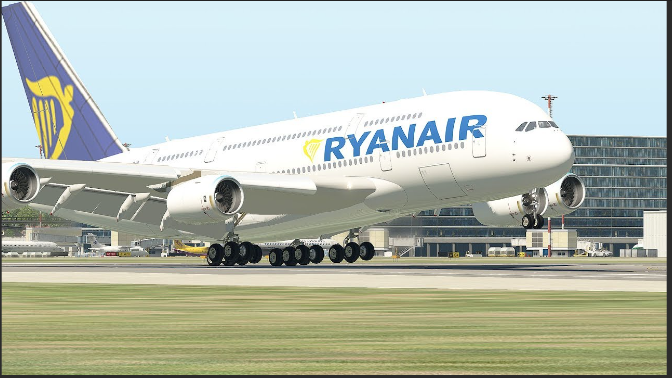

Woah! A330 but its beside A320, how large is the sigma A330? | Aviation Site
Yo! It's my first time flying an Airbus A330, I don't find it large, it's basically like an Airbus A321 or A320!
No no no no.. Thats where your wrong! The seating layout and the comparison is basically mind blowing!!!
Let's compare the A321 to the A330, let's make you impressed!
Here are the images:
The Airbus A330 is a wide-body aircraft seating 250 to 300 passengers, designed for long-haul flights with a range of up to 6,500 nautical miles. In contrast, the A320 is a narrow-body aircraft that accommodates 140 to 240 passengers, ideal for short to medium-haul routes with a range of about 3,300 nautical miles. The A330 has larger engines and more spacious cabins, while the A320 typically offers single or dual-class layouts, making the A330 better for international travel and the A320 more suited for domestic flights.
Here is the seat layout of the A330
A320 has lesser seating than the A330. A330 has more Business Class seats.
It also evolved into an Airbus A330neo. Meaning it became a larger aircraft.
Looks huge, right? I know.
That's the end of the whole Aviation Site. You have officially became an Aviation Member! Before you go, here's an extra image of an aircraft you have never seen before! [3 pictures]
The Cursed Airbus 3, yes

HEHEHEHE IM BETTER THAN SOME AIRLINES NOW!! WHOS BETTER NOW!!
You may think this is normal.. But Ryanair only serves small aircrafts!!!
IF YOU BELIEVE THIS, THERE AINT NO A390!!!
|